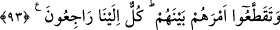
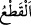

kelimesinden türemiştir. “el-Kavm” bir kasdı olan topluluk demektir. Üzerinde
toplandıkları ise kastedilen dindir.
“Ben de sizin Rabbinizim.” Sizin benden başka ilâhınız yoktur. “Öyle ise” başkasına
değil yalnız “bana kulluk edin.”
93. (İnsanlar) kendi aralarında (din ve devlet) işlerinin birliğini bozdular. Halbuki
hepsi bize döneceklerdir.
“(İnsanlar) kendi aralarında (din ve devlet) işlerinin birliğini bozdular.” Bu ifâde,
muhâtaba hitaptan, üçüncü şahıs ifâdesine geçiştir. “
’ (parçalamak), gözle görülen
cisimleri ya da basîretle idrâk edilen aklî şeyleri birbirinden ayırmaktır. Yâni insanlar
dînî konularda paramparça oldular ve aralarında ihtilâfa düştüler. Bölük pörçük fırkalar
oldular. Sanki burada şöyle denilmektedir: “Bütün peygamberlerin üzerinde
birleştikleri Allah’ın dininde onların işledikleri günahların ne kadar büyük olduğunu
görmez misin? Çünkü onlar kendi aralarında dinlerini param parça ettiler. Her topluluk
dinin bir bölümüne sarıldı. Dinlerini parça parça edince sanki onlar birbirlerine lânet
eden ve birbirlerinden uzaklaşan farklı gruplar hâline geldiler. Nitekim Kâşifî şöyle
der: “Geçmiş ümmetler, dinlerine dâir olan işlerde kendi aralarında ayrıldılar. Yâni
yahûdîler ve hristiyanlar gibi fırka fırka oldular ve her biri diğerini tekfir etti.”
Bir rivâyette sâbittir ki İbrahim (a.s.)’ın ümmeti kendisinden sonra yetmiş fırkaya,
Mûsâ (a.s.)’ın ümmeti yetmiş bir fırkaya, Îsâ (a.s.)’ın ümmeti ise yetmiş iki fırkaya,
Muhammed (a.s.)’ın ümmeti ise yetmiş üç fırkaya ayrılacaktır. Onların biri hariç hepsi
ateştedir. Onlar ise Allah ve Rasûlü’nün tâyin ettiği hiçbir şeye, hevâ ve hevesi
karıştırmazlar.
“Halbuki” parça parça olan bu fırkaların “hepsi” her biri sonunda öldükten sonra
diriltilerek başkasına değil “bize döneceklerdir.” O zaman biz de onlara yaptıklarına
göre karşılık vereceğiz.
et-Te’vîlâtü’n-Necmiyye’de şöyle der: “Halkın işlerinde çeşitli guruplara
ayrıldıklarına işâret etmektedir. Bazıları dünyayı talep eder, bazıları âhiret saâdetini
arzu eder. Bir kısmı da Allah’ı ister. Allah Teâlâ şöyle buyurur: “Halbuki hepsi bize
döneceklerdir.” Bu durumda dünyayı talep eden, kahrımızın sûreti olan cehenneme
dönecektir. Âhireti isteyen ise lütfumuzun sûreti olan cennete dönecektir. Bizi taleb eden
ise bizim vahdâniyyetimize dönecektir.”
Bundan sonra onların amellerinin karşılığı şöylece açıklanmaktadır: